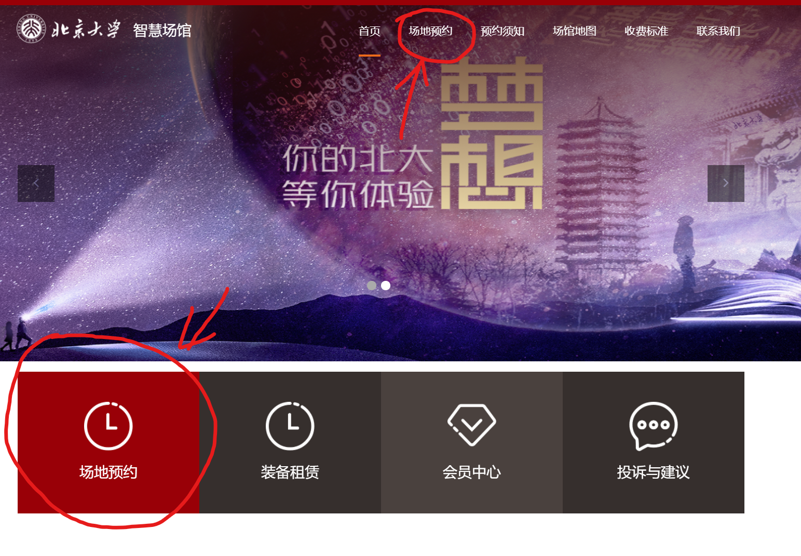

从[门户-信息服务-智慧场馆]，或直接点击链接到达智慧场馆主页；
点击“场地预约”：

邱德拔和五四的场地都可以约，看个人喜好；
点击“羽毛球场”进入选择时间界面：
每天中午12点，开放三天后的球场预约；周六/周日打球的话需要周三/周四中午12点及时刷新
12:00后，点击上方的小日历，选择要预约的日期（选不了就不停刷新），下方会显示目前的预约情况
选好想订的时间段，赶紧点击确认进入下一步；
看一眼时间段没问题后，赶紧提交订单
提交订单后系统会为我们保留我们预订的场地，免得被别人再次预约；下了订单就可以慢慢检查订场信息，或者问问小伙伴这个时间ok不ok；
付钱之前都是可以退单的
支付完成后场地就预订好啦，别忘了去群里发个群收款哦~（微信支付-收付款-群收款）
Ceress Goo
2021/09/21